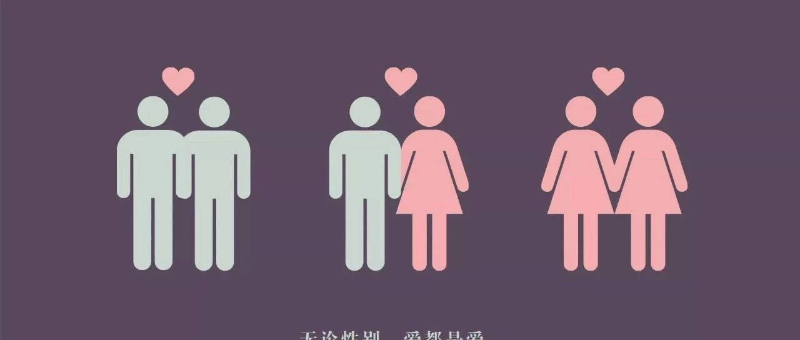

勇敢爱|After Coming Out


对于同性恋者来说，出柜最难的不是向朋友、同学、老师、同事甚至领导等出柜。最艰难的出柜抉择往往是要不要像家人出柜。"家庭出柜"不仅是同性恋者个人的"私事",也是重要的"家事"。家庭出柜的影响因素包括出柜主体的个体特征、前期铺垫、时机选择、宗教因素以及父母的文化认知和家庭期待等。家庭出柜迫使同性恋者陷于同性欲望与家庭伦理的冲突之中。
由于受传统伦理本位的、以"孝"为核心的礼制之约束,家族主义取向下的同性恋子女常常认为自己不孝,愧对父母与家庭。同样地，受儒家文化影响，孩子与家长之间的往往无法做到坦诚布公，平等的交流。孝道、关系伦理、家族主义、文化偏见、道德立场等这些要素共同导致家庭出柜成为两代人之间的两难困境。
同性恋子女的现身对父母而言是前所未有的观念冲击，出柜后并不意味着家长就能轻松接受孩子的身份。出柜≠结束，而是一场新的拉锯战的开始。往往出柜家庭面临的是“子女出柜，父母入柜”的尴尬局面。
那么同性恋子女该怎样向家长出柜，出柜后又该如何处理家庭关系、再重新融入家庭？
同霓将在5.28举办一场同志亲友分享会
听妈妈讲与同性恋小孩之间的故事
听同性恋者分享自己的出柜经历
我们欢迎一切性少数友好者参与其中，无论是有所困惑想要寻求帮助或者单纯好奇对话题有兴趣。我们都欢迎你们一起来参加我们的分享会。
扫描二维码即可报名参加活动 活动将收取五元茶水费（发表活动反馈即返还茶水费） 活动地点将由短信通知

感谢大家对同霓人类研究所的关注与支持，我们将继续在爱与正义的路上前进！
文字：开心
排版：开心
图片：网络
参考文献：“家庭出柜”：影响因素及其文化阐述
同霓人类研究所

一群爱与正义的理想主义者
长按二维码关注
微信改版后想要更快看到我们的文章
可以按下图步骤操作喔~